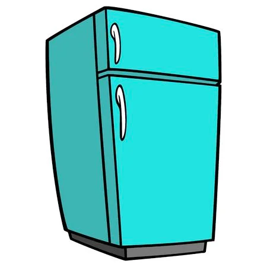

日本語の文字
(The Japanese letters)
- Japanese is written as a mixture of three scripts: Hiragana, Katakana & Kanji
- Hiragana is the syllabary alphabet used to write grammatical elements and native japanese words
- Katakana is the syllabary alphabet used to write loanwords and foreign names
- Kanji are the chinese logographic characters adopted by the japanese to write words & verbs
- Each Hiragana word will have its Kanji writing equivalent between these brackets "「」"
| # | Letter | Writing | Word | Image |
ひらがな (Hiragana) |
|---|
| 1 | | | あめ「雨」 |  |
| 2 | | | いぬ「犬」 | |
| 3 | | | うさぎ「兎」 | |
| 4 | | | えんぴつ「鉛筆」 |  |
| 5 | | | おう「王」 |  |
| 6 | | | かえる「蛙」 |  |
| 7 | | | きつね「狐」 |  |
| 8 | | | くま「熊」 | |
| 9 | | | けいと「毛糸」 | |
| 10 | | | こま「独楽」 | |
| 11 | | | さる「猿」 | |
| 12 | | | しか「鹿」 | |
| 13 | |  | すいか「西瓜」 | |
| 14 | | | せみ「蝉」 | |
| 15 | |  | そら「空」 | |
| 16 | | | たまご「卵」 |  |
| 17 | | | ちず「地図」 | |
| 18 | |  | つき「月」 | |
| 19 | | | て「手」 | |
| 20 | |  | とら「虎」 |  |
| 21 | |  | ながぐつ「長靴」 | |
| 22 | | | にわとり「鶏」 | |
| 23 | | | ぬの「布」 | |
| 24 | | | ねこ「猫」 |  |
| 25 | | | のり「糊」 | |
| 26 | |  | はな「花」 |  |
| 27 | |  | ひ「日」 |  |
| 28 | |  | ふえ「笛」 | |
| 29 | |  | へび「蛇」 | |
| 30 | | | ほん「本」 |  |
| 31 | | | まど「窓」 | |
| 32 | | | みず「水」 |  |
| 33 | | | むし「虫」 |  |
| 34 | |  | めがね「眼鏡」 |  |
| 35 | | | もも「桃」 | |
| 36 | | | やま「山」 | |
| 37 | | | ゆき「雪」 | |
| 38 | |  | よる「夜」 | |
| 39 | | | らっぱ「喇叭」 | |
| 40 | | | りんご「林檎」 |  |
| 41 | | | るすばん「留守番」 | |
| 42 | |  | れいぞうこ「冷蔵庫」 |  |
| 43 | | | ろうそく「蝋燭」 | |
| 44 | | | わに「鰐」 | |
| 45 | | | てをあらう「手を洗う」 | |
| 46 | | | しんぶん「新聞」 | |
カタカナ (Katakana) |
|---|
| 1 | | | アイスクリーム | |
| 2 | |  | イースター | |
| 3 | | | ウイルス | |
| 4 | | | エアコン | |
| 5 | | | オレンジ |  |
| 6 | | | カセット | |
| 7 | | | キー | |
| 8 | | | クーポン | |
| 9 | | | ケーキ | |
| 10 | | | コック |  |
| 11 | | | サテライト | |
| 12 | | | シート | |
| 13 | | | スイッチ | |
| 14 | | | セメント | |
| 15 | | | ソファ | |
| 16 | | | タクシー |  |
| 17 | | | チケット | |
| 18 | | | ツナ | |
| 19 | | | テーブル |  |
| 20 | | | トースター | |
| 21 | | | ナイフ | |
| 22 | | | ニードル | |
| 23 | | | ヌードル | |
| 24 | | | ネクタイ | |
| 25 | | | ノート | |
| 26 | | | ハウス |  |
| 27 | | | ヒーロー | |
| 28 | | | フード | |
| 29 | | | ヘリコプター | |
| 30 | | | ホテル | |
| 31 | | | マーケット | |
| 32 | | | ミニバン | |
| 33 | | | ムービー | |
| 34 | | | メダル |  |
| 35 | |  | モニター | |
| 36 | | | ヤク | |
| 37 | | | ユーロ | |
| 38 | | | ヨット | |
| 39 | | | ライオン | |
| 40 | | | リード | |
| 41 | | | ルーラー | |
| 42 | | | レモン |  |
| 43 | | | ロケット |  |
| 44 | | | ワゴン | |
| 45 | | | ヲタ | |
| 46 | | | パン |  |
Japanese numbers (bonus)
| ろく | なな | はち | きゅう | じゅう |
| 六 | 七 | 八 | 九 | 十 |
| 6 | 7 | 8 | 9 | 10 |